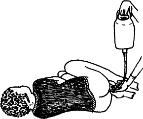

{% set pagetitle = "How to give rectal fluids" %}
{% set seq_length = 5 %}
{% set seq_position = 1 %}
{% set seq_llink = "javascript:;" %} ## set rlink equal to next page href
{% set seq_rlink = "How_to_give_rectal_fluids2.html" %} ## set llink equal to previous page href
{% extends "templates.jinja/base.page-with-sequence.html" %}
{% block title %} Hesperian - Pregnancy & Birth{% endblock %}
{% block id %}How_to_give_rectal_fluids1{% endblock %}
{% block content %}

You will need:
A clean enema bag, or a can or tin with tubing.
A cloth to place under the woman.
600 ml (a little more than ½ a liter bottle) of warm (not hot) drinking water. Salt and sugar rehydration drink or a bag of IV solution can be used instead.